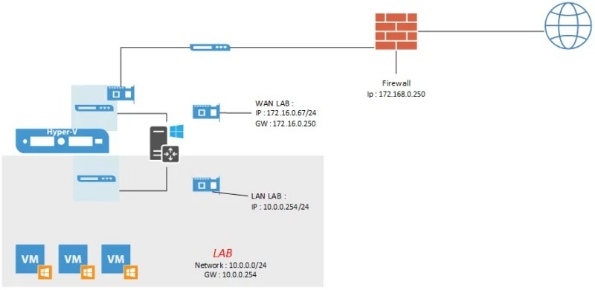
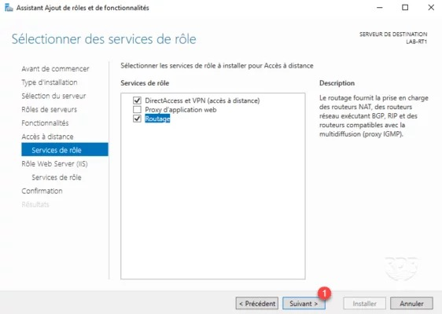
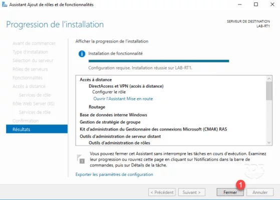
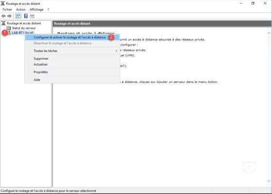

Dans
ce tutoriel, je vais vous expliquer comment mettre en place le
routage avec Windows Server. J’utilise régulièrement
ce rôle dans les différents lab que je mets en place sous Hyper-V.
J’isole la plateforme de test avec un commutateur privé
et j’utilise une machine virtuelle avec deux interfaces réseau. Une carte est connectée sur le commutateur privé (LAN)
et la seconde sur le réseau qui fait aussi d’internet (WAN).

Prérequis :
● Un serveur avec au minimum deux cartes réseaux.
● Identifier les cartes réseaux
● Notion de routage
Sommaire
- Installation du rôle Accès distant
- Configuration du routage
- Configuration du transfert de port
- Suivre les connexions
- Filtrage des connexions sortantes
Installation du rôle Accès distant
1. Depuis le Gestionnaire de serveur, cliquer sur Ajouter des rôles et des fonctionnalités 1 .
2. Passer la première fenêtre de l’assistant en cliquant sur Suivant 1 .
3. Choisir Installation basée sur un rôle ou une fonctionnalité 1 puis cliquer sur Suivant 2 .
4. Sélectionner le serveur où le rôle doit être installé 1 et cliquer sur Suivant 2 .
5. Cocher le rôle Accès distant 1 et cliquer sur Suivant 2 .
6. Passer les fonctionnalités en cliquant sur Suivant 1 .
7. Cliquer sur Suivant 1 pour passer le résumé du rôle Accès distant.
8. Cocher le service Routage 1 .
9. Cliquer sur Ajouter des fonctionnalités 1 pour confirmer l’ajout des dépendances.
10. Cliquer sur Suivant 1 .

11. Passer le résumé du rôle IIS en cliquant sur Suivant 1 .
12. Valider les services IIS en cliquant sur Suivant 1 .
13. Cliquer sur le bouton Installer 1 .
14. Patienter pendant l’installation des rôles …
15. L’installation terminée, quitter l’assistant en cliquant sur Terminer 1 .

Maintenant les rôles et services sont installés, nous allons voir comment configurer le routag
Configuration du routage
1. Ouvrir la console Routage et accès distant.
2. Faire un clic droit sur le serveur 1 et cliquer sur Configurer et activer le routage et l’accès à distance 2 .

3. Au lancement de l’assistant cliquer sur Suivant 1 .
4. Choisir NAT (Network address translation) 1 puis cliquer sur Suivant 2 .
5. Sélectionner l’interface WAN 1 et cliquer sur Suivant 2 .
6. La configuration est terminée, quitter l’assistant en cliquant sur Terminer 1 .
7. Facultatif : si le message suivant s’affiche, cliquer sur OK 1 .
8. Patienter pendant le démarrage des services …

9. Le service est activé sur le serveur 1 , celui-ci est passé vert.

10. Aller sur IPv4 1 / Général 2 . Si les postes de votre réseau sont correctement configurés, les valeurs Octets Entrant / Sortant devraient augmenter 3 .